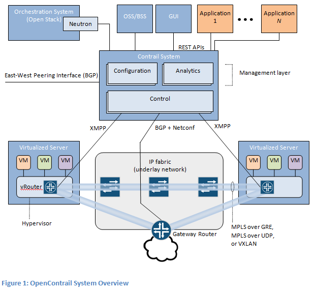
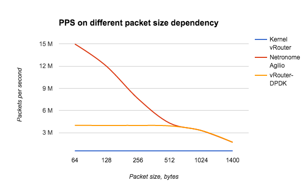

OpenContrail
OpenContrail是Juniper推出的开源网络虚拟化平台，其商业版本为Contrail。
架构
OpenContrail主要由控制器和vRouter组成：
- 控制器提供虚拟网络的配置、控制和分析功能
- vRouter提供分布式路由，负责虚拟路由器、虚拟网络的建立以及数据转发

vRouter支持三种模式
- Kernel vRouter：类似于ovs内核模块
- DPDK vRouter：类似于ovs-dpdk
- Netronome Agilio Solution (商业产品)：支持DPDK, SR-IOV and Express Virtio (XVIO)

参考文档